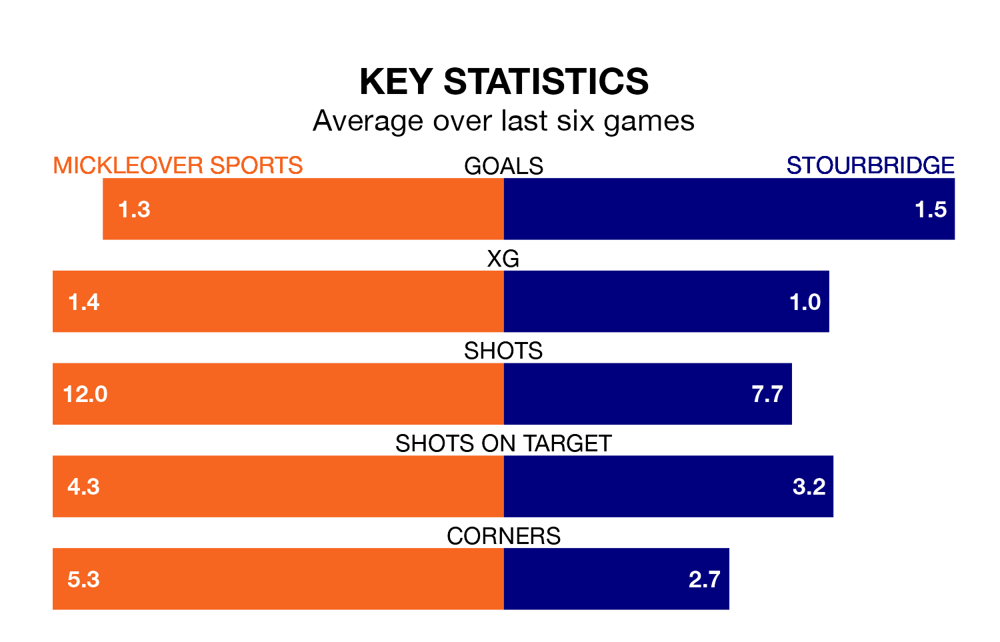

Mickleover Sports host Stourbridge in Tuesday's late match at the Don Amott Leisure Group Arena looking to bounce back from defeat last time out in Southern League Premier Central.
Mickleover Sports, who sit third in the league after 23 games, fell to a 1-0 home defeat to AFC Telford United on Saturday.
They face a Stourbridge side who also lost their last match, a 1-0 defeat to Halesowen Town, and who sit 17th in the table.
With 50 goals in 23 games so far this season, Mickleover Sports are the league's joint-second-highest scorers with 2.2 goals per game. And they are conceding fewer than average, letting in 24 goals at a rate of 1.0 per game.
Stourbridge are also above average scorers, with 1.6 goals per game, compared to a league average of 1.5. They have conceded 1.4 goals per game.
The home team are in disappointing form in Southern League Premier Central, with one win and two draws from their last six games.
With two wins and four losses over that period, the visitors' form is slightly better – they have taken six points from 18, compared to Mickleover Sports' five.
In the last three years, Mickleover Sports and Stourbridge have played each other on three occasions. They won one each, and they drew once.
Their last meeting was on September 30, when Stourbridge won 2-0 at home.
Updated: 15:34, 08/01/24